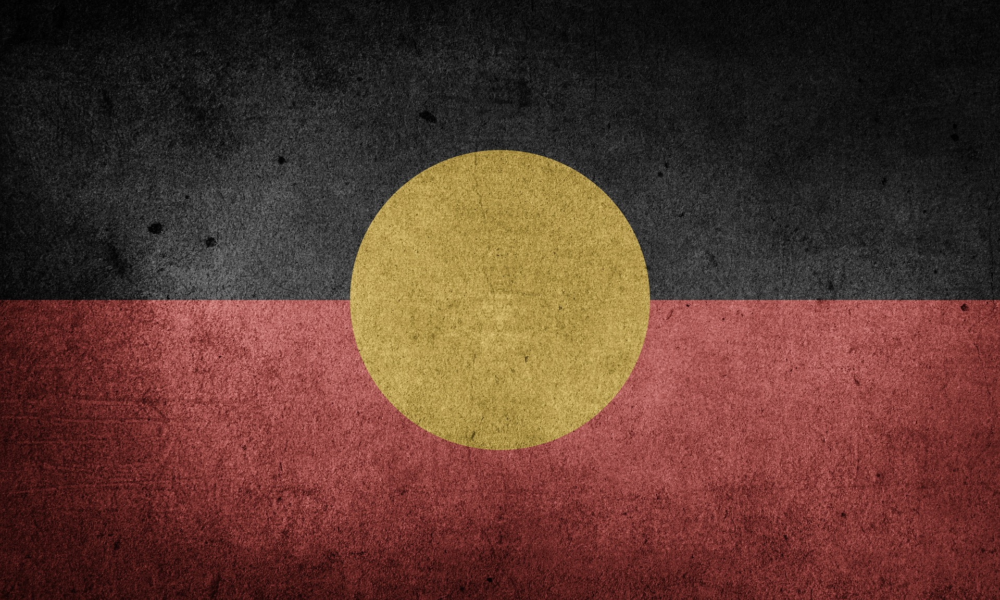
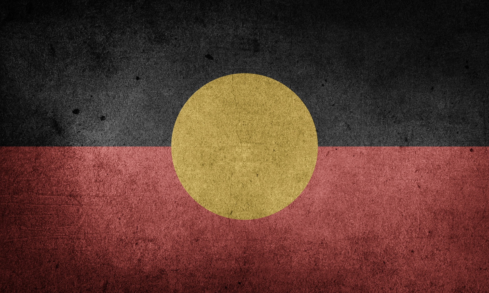

My Country: Australia
 

Interesting Aussie Facts
- Capital City:
- Population:
- Population Density:
- Irrelevant. Lots of km& for all.
- System of Measurement:
- Language:
- English, English. It's zed not zee.
- Politics:
- No one cares all that much. We do okay here.
- National Anthem:
- Terrible. Worst song ever written.
- Iconic National Songs:
- The Seekers - I am Australian.
- John Farnham - You're the Voice.
- Men at Work - Land Down Under.
- Peter Allan - I Still Call Australia Home.
- National Pastimes:
- BBQ and beer at the beach.
- Beer Pong.
- Chilling out and relaxing.
- National Beer:
- Not Fosters. Tastes like p!ss.
- Deadly Creatures:
- National Sports:
- Cricket.
- Aussie Rules Footy.
- Aussie War Cry:
- Ozzie Ozzie Ozzie. Oi Oi Oi.
Australian Icons